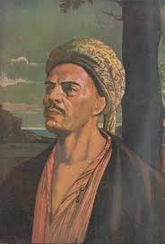
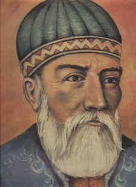
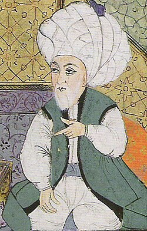
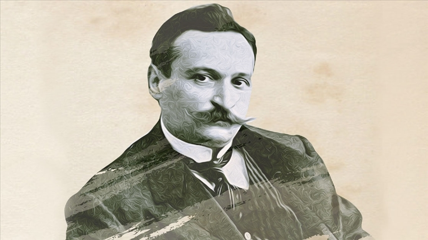
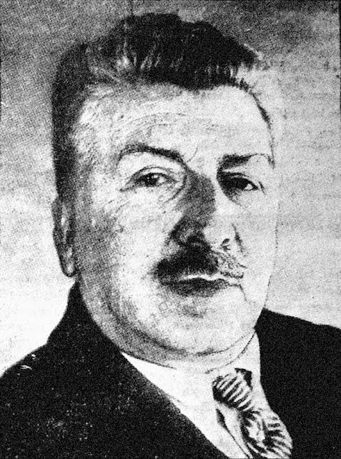
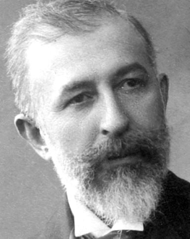
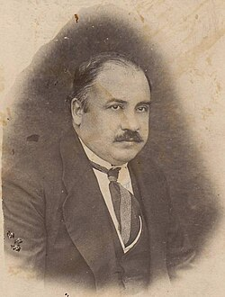
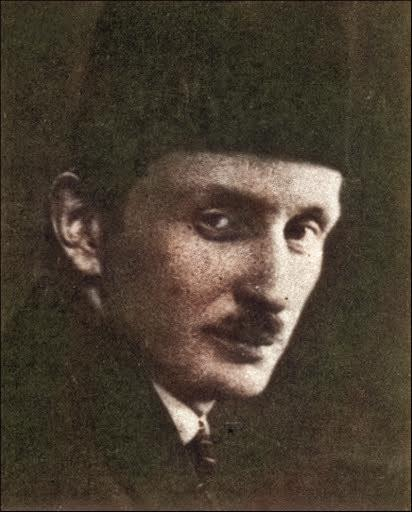
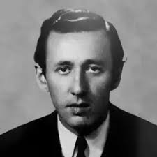
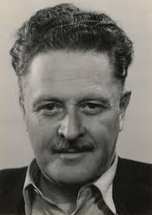

Kelimelerle çağları aşan ölümsüz sesler…

1240 – 1321
Türk tasavvuf edebiyatının en önemli isimlerinden biridir. Sade dili ve insan sevgisini temel alan şiirleriyle halkın gönlünde büyük yer edinmiştir. Hoşgörü, aşk ve Allah sevgisi eserlerinin merkezindedir.

1483 – 1556
Divan edebiyatının en büyük şairlerinden biri olan Fuzulî, aşk ve ıstırabı derin bir lirizm ile işlemiştir. Arapça, Farsça ve Türkçe olmak üzere üç dilde divan sahibidir. "Leyla vü Mecnun" mesnevisi başyapıtları arasındadır.

1526 – 1600
"Sultanü'ş-Şuarâ" (Şairler Sultanı) lakabıyla anılan Bâkî, Osmanlı divan şiirinin zirvelerinden birini temsil eder. Kanuni Sultan Süleyman döneminde yaşamış; şiirlerinde dünya zevklerini, geçiciliği ve aşkı ustalıkla işlemiştir.

1867 – 1915
Servet-i Fünun edebiyatının öncü ismi olan Tevfik Fikret, şiirde biçim ve içerik yeniliğinin sembolüdür. Toplumsal eleştiri ve özgürlük temaları eserlerinde belirgin biçimde yer alır. "Sis" ve "Haluk'un Defteri" önemli yapıtlarındandır.

1870 – 1934
Servet-i Fünun akımının Tevfik Fikret ile birlikte en önemli şairidir. Fransız sembolizminden derin biçimde etkilenen Cenap, müzikal ve görsel dili şiire taşımıştır. Zengin dili ve yenilikçi imgelemiyle tanınır.

1866 – 1945
Türk edebiyatında modern romanın kurucusu kabul edilir. Servet-i Fünun nesrinin en güçlü kalemi olan Halit Ziya, "Mai ve Siyah" ve "Aşk-ı Memnu" adlı romanlarıyla Türk edebiyatına ölümsüz eserler kazandırmıştır.

1876 – 1924
Türk milliyetçiliğinin ve Türkçülük akımının ideologu olan Ziya Gökalp, edebiyatı bir fikir aracı olarak kullanmıştır. Sade dil ve hece ölçüsünü savunmuş; Milli Edebiyat döneminin düşünsel temellerini atmıştır.

1884 – 1920
Modern Türk hikâyeciliğinin kurucusu sayılan Ömer Seyfettin, sade ve akıcı Türkçesiyle halkın ruhunu yansıtan eserler kaleme almıştır. Milli Edebiyat döneminin en verimli kalemi olup "Yalnız Efe", "Primo Türk'ün Macerası" gibi eserleriyle tanınır.

1914 – 1950
Garip akımının kurucularından olan Orhan Veli, şiirde ölçü ve uyağı ikinci plana atarak günlük konuşma dilini öne çıkarmıştır. Modern Türk şiirinin en yenilikçi şairlerinden biridir.

1902 – 1963
Serbest nazımın öncüsü kabul edilen Nazım Hikmet, toplumcu gerçekçi anlayışıyla Türk şiirinde büyük bir devrim yaratmıştır. Şiirlerinde özgürlük, umut, aşk ve insanlık temaları öne çıkar.